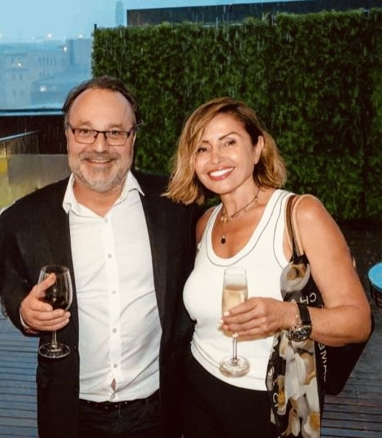

Strategic Collaboration
Great Projects Begin with the Right People.
Paulette Mirzikinian — Founder, Circle8
Strategic Collaboration
Paulette Mirzikinian — Founder, Circle8
About
Paulette Mirzikinian — Founder, Circle8
Paulette Mirzikinian spent over 20 years working across property, design, construction and development services before she ever called it her business. Long enough to notice a pattern: Trusted and valued relationships are the foundation and the deals that went well were never really about who could do the job. They were about who trusted whom, and how long that trust had been building before anyone sat down to talk terms.
So Circle8 was founded on the belief that if you could connect the most trusted people in the industry and start a conversation you could possibly create a collaboration of opportunity, teams and the action to move them forward to very successful outcomes.
What We Do
Circle8 is a strategic development and project collaboration partner operating across property, development, design, construction, and project sales. Because when trust comes first, better projects follow.
From the first conversation through to delivery, Circle8 stays present — offering help, support and clear communication throughout. Good people alone don't guarantee a smooth delivery; projects often stall when time pressure collapses communication and the thread between teams breaks, creating delays and undermining the impression a project leaves behind. That's the gap Circle8 is built to close.
Every engagement is anchored in positioning your business with the right stakeholders from the start — creating alignment, influence and transparency where it strategically counts the most.
The network is built on long-term trust, credibility, and genuine industry relationships. It's not just about opening doors — it's ensuring the right people are in the room.
We understand both the creative, commercial, and market realities of development and project positioning — combining relationship intelligence with commercial rigour.
More than a consultancy, Circle8 acts as a strategic development and project partner — extending your project presence, influence, and market positioning with authority and clarity.
The Circle8 Ecosystem
Identify development opportunities, site acquisitions and strategic project alignment.
Connect banks & private lenders, investors, and JV partners with commercially aligned opportunities.
Align developers, architects, builders, valuers, quantity surveyors, and financial institutions early in the process.
Support product, supplier, and design decisions that strengthen project outcomes.
Facilitate communication and alignment across project teams and stakeholders.
Assist with workflow coordination, operational support, and project momentum ensuring on-time delivery.
Leverage trusted networks to create long-term partnerships and future opportunities.
Support projects from acquisition through to delivery with collaborative oversight.
Global Design Series — Stay in the Series
Testimonials
The people Paulette has worked with, in their own words.

What stands out most about Paulette is her ability to quickly build strong relationships by genuinely listening to understand the client's needs, then offering smart, tailored solutions that build trust and rapport, ensuring that the options presented to clients were not only creative but also practical and well-informed. Similarly, her move from product representation to client services equally demonstrated a client-first mindset, going beyond transactional interactions to truly understand and support her client's long-term needs.

What truly sets Paulette apart is her remarkable ability to build and maintain strong, authentic relationships. She approaches every interaction with thoughtfulness and empathy, making clients and colleagues feel genuinely heard, valued, and supported. Her sharp attention to detail and unwavering professionalism ensured every task was executed to the highest standard, but it's her ability to connect with people that truly distinguishes her.

I have had the privilege of collaborating with Paulette for several years, and her commitment to open and transparent collaboration on our project was unwavering. Paulette consistently exhibits a level of trust and confidence with her clients, project managers and designers. Her ability to cultivate and sustain enduring relationships is a testament to her dedication and genuine concern for her clients' success.

Paulette is one of those people who makes working together feel easy. She's approachable, real, and has a personable no-fuss way of getting things done that builds trust really quickly. She has the ability to understand what everyone needs — whether it's a designer, a contractor or a client — and brings it all together without overcomplicating things. Paulette's got a solid understanding of the industry and isn't afraid to speak up when something doesn't feel quite right.

I have really enjoyed working with Paulette. I have found her to be proactive, a problem solver and a great communicator. In our industry, things move at a fast pace and Paulette certainly keeps up, often ahead of the game and always with a smile too! I would not hesitate in recommending Paulette to any potential clients.

I have had the absolute pleasure of working with Paulette over the last ten years and what always strikes me is her energy and how she makes people feel comfortable. She is one of those rare people who brings heart and smarts to the table. She is incredibly knowledgeable about the industry in general, with services knowledge available to suit the desired outcomes for both commercial and residential applications. This combination of skill makes a world of difference when working on developing the right opportunities.

What stands out about Paulette is her ability to build long lasting genuine relationships and bring people together around a shared vision. In my experience working across private lending, finance broking, and joint venture projects, trust and communication are critical. Paulette has a natural ability to understand people's objectives, identify opportunities, and connect the right stakeholders to achieve successful outcomes. She approaches every interaction with professionalism, integrity, and a genuine desire to help others succeed.

I've worked with plenty of people who talk about connections, but Paulette is someone who genuinely creates them. The opportunities we've been involved in have come about because she knows how to bring the right people to the table. What I appreciate most is that she stays involved. Paulette doesn't just make an introduction and move on — she follows through, helps keep things moving, and genuinely wants to see everyone succeed. That's a rare quality and one that's made her a valued part of many successful opportunities.

BOThroughout our dealings, she has consistently looked for ways to add value, whether that has been connecting us with builders, introducing potential JV opportunities, or exploring solutions that support the delivery and presentation of our projects. What I've always appreciated is her ability to see opportunities others might overlook. She approaches every conversation with enthusiasm, commercial awareness, and a genuine interest in helping projects succeed. Paulette is a valuable person to have in your corner.

Paulette has a unique ability to bring people, opportunities, and ideas together in a way that creates value for everyone involved. Throughout our dealings, we've always appreciated her proactive approach, industry knowledge, and willingness to help wherever she can. She understands the importance of strong relationships and has a natural way of connecting people that often leads to positive outcomes. Paulette is authentic, professional, and someone who genuinely enjoys seeing others succeed.

Paulette has a real gift for building meaningful connections, whether it's with clients, design professionals, or construction teams — she consistently fosters collaboration that drives results. What sets Paulette apart is not just her ability to open doors and create opportunities, but the way she does it: with warmth, grace, and a truly people-first mindset. She's a natural connector who uplifts everyone around her, and her positivity is as contagious as her work ethic is impressive. She's a beautiful human being and a joy to work with.

Some people have a natural ability to make meaningful connections, and Paulette is one of them. Although we've only known each other for a short time, what struck me immediately was her genuine interest in people and her ability to bring together conversations, opportunities, and relationships in a way that feels authentic. Paulette approaches everything with enthusiasm, professionalism, and a real desire to help others succeed. In an industry built on trust and collaboration, those qualities stand out and leave a lasting impression.

Circle8 Talks
What is
Up to eight seats. Conversations that unite the industry sectors, built around collaborating for a collective win throughout the life cycle of projects from acquisition to delivery.
Get in Touch